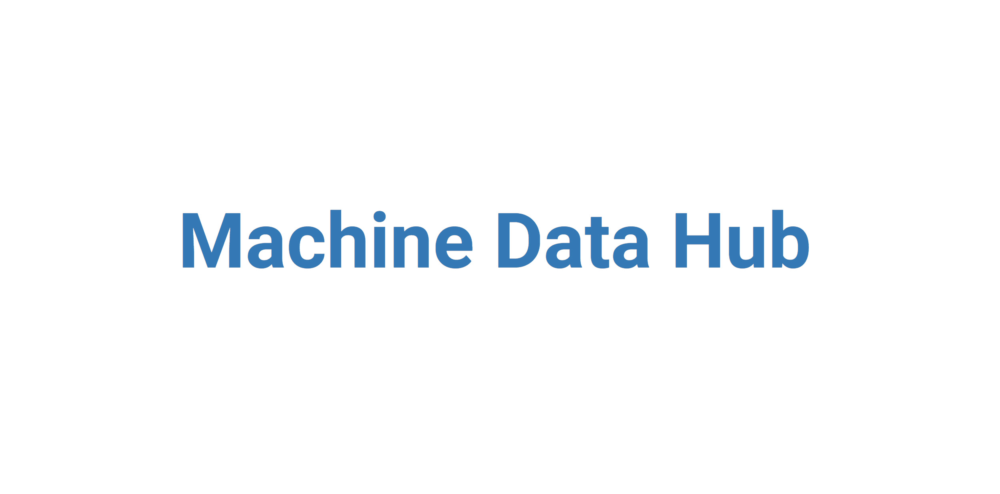

Machine Data Hub
Due to the COVID-19 pandemic, my capstone changed a few times. Before the school year started, the planned project was to implement a machine learning algorithm on an FPGA to classify some kind of human stimuli -- audio, eye tracking, hand movement, etc. When school transferred to Zoom, the plan was to design object tracking algorithsm using Google Colab. I already knew the basics of object tracking from my two machine learning courses and image processing course, and I opted into the ENGineering INnovation and Entrepreneurship (ENGINE) program. Late December 2020, I receive my assignemnt to build an online data hub for Lockheed Martin.
We designed Machine Data Hub (MDH) so that users could easily locate prognostics and health management datasets. My partner, Jiwoo, and I split up the tasks to develop the front-end. I developed the bulk of every page while Jiwoo navigated the trickiness of filtering. After we felt substantial progress had been made on our parts, we switched work to analyze and debug. Using this method, a large portion of the website was completed after the 6th week of our 20 week capstone.
With a signficant majority of the capstone completed early, I looked into an PostgreSQL database. The sponsors asked for a front-end only website, however, we realized we could easily store text and links to datasets on a database, allowing us to use a Heroku PostgreSQL database for free. The team and I designed different schemas and I set up various databases to get experience.
During the second 10 weeks of the capstone, I focused on improving the User Experience (UX) and User Interface (UI). I implemented feedback received from UW's Department of Human Centered Design and Engineering in addition to implementing feedback from the sponsors.
One sponsor mentioned we could host Jupyter Notebooks online through Binder, leading us to developing machine learning blogs to host on the website. While my teammates developed machine learning projects and blog posts, I developed the blog page on the website. Unfortunately, I did not have time to compile a strong or coherent blog post as my main responsibiliy was the UI/UX and blog features of the website.
At the end of the capstone, we gave a brief 10 minute presentation with 5 minutes of QnA. We were fortunate enough to receive feedback and compliments from viewers. Then I was done! I had completed my senior capstone!
Reviewing My Capstone Experience
I give my capstone experience 3/5 stars.
My team was amazing, the sponsors were amazing, I worked hard and learned a lot. The experience was incredibly fun, exciting, and I genuinely gave it my all every single day. It was my priority; I had been looking forward to and preparing for my capstone since I was a freshmen.
I hate to come off of the top ropes like this, but I was incredibly disappointed that my capstone was not EE focused. I had the option to choose my capstone from a list of 42 capstones. If I recall correctly, only two were EE based while the others were website or machine learning focused.
I hoped my capstone would have hardware aspects. Really unfortunate timing.